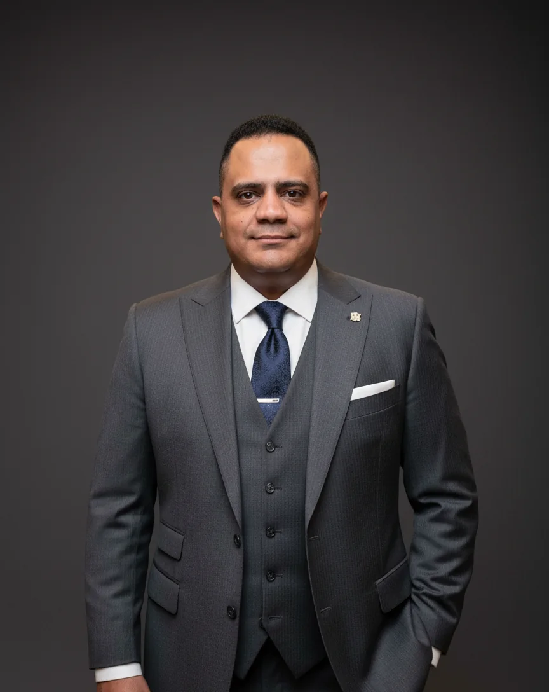

Mahmoud
Salama
I architect systems
that move institutions.
I lead technology and digital transformation across enterprise architecture, platforms, data, integration, governance and service operations—turning executive intent into systems people can run, support and improve.

Scalable systems.
Real impact.
30.0444° N · 31.2357° E
Proof across technology and transformation.
Each story reveals a different institutional technology challenge: modernization, governance, data, operations and scale.
MedIQ Core Modernization
A live institutional ecosystem modernized for reliability, maintainability and scale, with core modernization delivered in-house.
E‑Tender
10 linked steps · 30 stages · 15 Chairman approvals · 20+ governed roles.
Assets & Location
242,816 devices · 164 entities · GS1 integration · QR/GPS-enabled location approach.
Leadership across the whole operating system.
Technology leadership is not only architecture or delivery. It includes the organization, operating controls and service model that keep platforms useful after launch.
Direction & portfolio
Technology roadmaps, investment priorities, executive KPIs, vendors, risk and controlled modernization.
Systems that fit
Enterprise and solution architecture, applications, data, APIs, integrations, security and continuity.
Governed execution
SDLC, program and release governance, quality, production readiness and accountable cross-functional delivery.
Service ownership
A dedicated ~20-person support and customer-service operation, incident/RCA practices, onboarding, training and adoption.
From C# and SQL to enterprise architecture.
The executive perspective is grounded in years of hands-on engineering, team leadership, public-sector delivery and production support—not detached technology vocabulary.
An evidence-led capability map
Modern .NET, APIs, data platforms, analytics, Dynamics 365 integration, delivery tooling, operations and historically accurate engineering stacks.
PROJECTSEgypt, Oman and national-scale programmes
Procurement, supply, assets, HTA, track and trace, education, correspondence, healthcare and public digital services.
EXPERIENCEThe complete career arc
Hands-on systems foundations, two development-team leadership roles and enterprise-wide technology accountability.
Technology is a leadership discipline.
Strong outcomes come from connecting architecture with people, data, governance, delivery, operations and continuous improvement.
Understand
People, process, data, objectives, constraints and dependencies.
Prioritize
Focus technology investment on outcomes, risk and institutional value.
Design
Shape systems, data, integrations, controls and operating models.
Deliver
Move from plans to controlled increments with visible ownership.
Operate
Build reliability, security, support, adoption and accountability.
Improve
Use evidence, analytics and feedback to drive the next decision.
MedIQ received the Pharma Awards 2026 Digital Transformation Award. Programme recognition is kept separate from personal recognition.